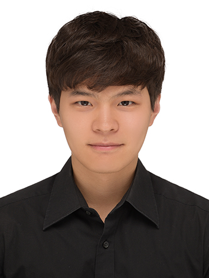
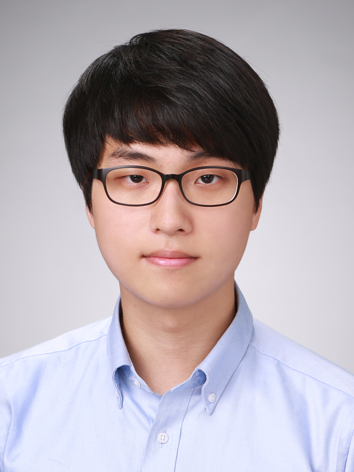
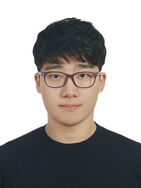
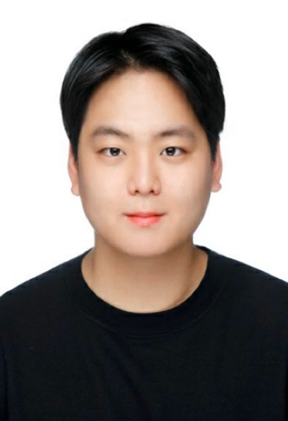
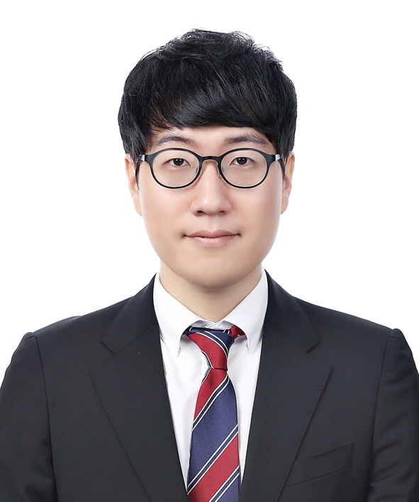
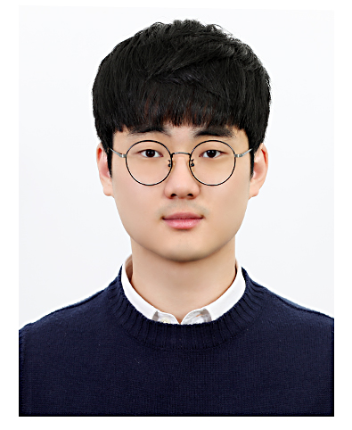
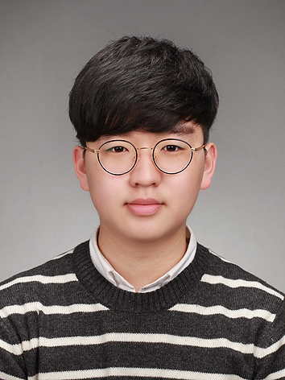
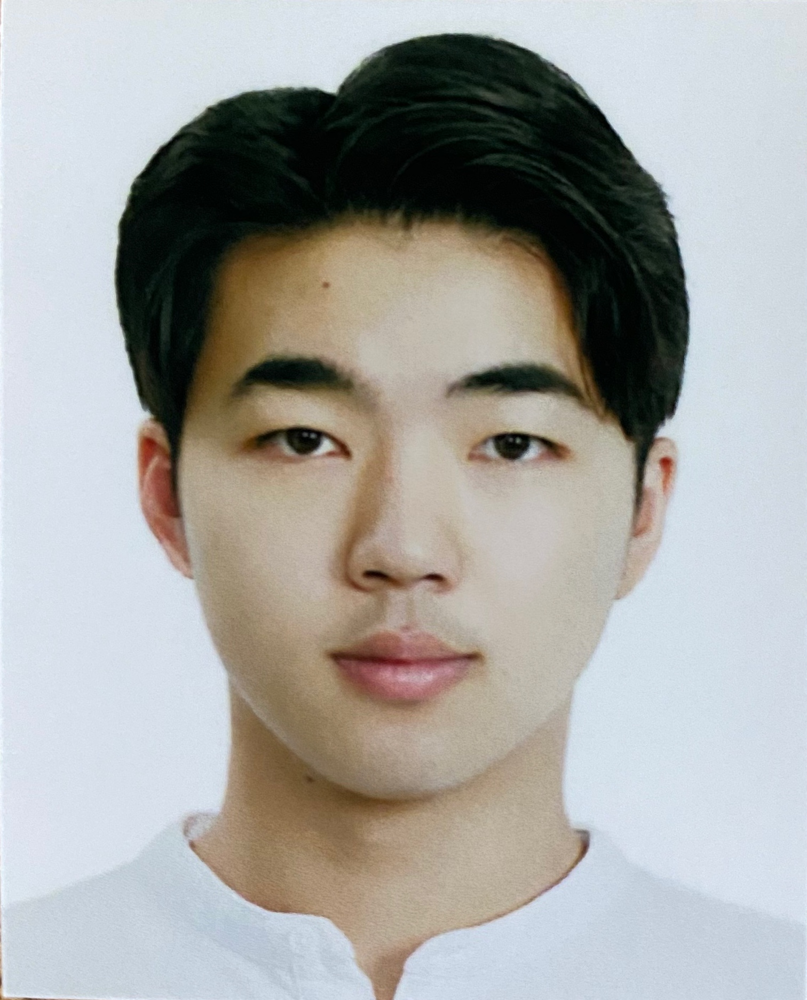

Professor
Woo Chang Kim (김우창) (Link to Full Curriculum Vitae)

Lab : IE B/D E2-2 #3107
E-mail : wkim(at)kaist.ac.kr
Tel : +82-42-350-3129
ACADEMIC POSITIONS
Department Head, Department of Industrial and Systems Engineering, KAIST, Daejeon, Korea, 2021 to
Present
Associate Professor (with Tenure), Department of Industrial and Systems Engineering, KAIST, Daejeon, Korea, 2009 to
Present
Director, Shinhan-KAIST Artificial Intelligence Finance Research and Development Center, 2019 to Present
PAST POSITIONS
[1] Visiting Professor, Department of Economics and Finance, LUISS Guido Carli, Rome, Italy, 2014
[2] Visiting Fellow, ORFE Department, Princeton University, Princeton, NJ, USA, 2013 to 2014
[3] Guest Researcher, Hausdorff Research Institute for Mathematics, University of Bonn, Bonn, Germany,
2013
EDUCATION
Ph.D., and M.A., Operations Research & Financial Engineering, Princeton University, 2009 and 2007,
respectively
M.S., and B.S., Industrial Engineering, Seoul National University, 2001 and 1999, respectively
EDITORIAL POSITIONS
[1] Managing Editor, Quantitative Finance (SSCI), 2017 to Present
[2] Associate Editor, Optimization and Engineering (SCIE), 2014 to Present
[3] Editorial Board Member, Journal of Portfolio Management (SSCI), 2013 to Present
[4] Associate Editor, Journal of the Korean Institute of Industrial Engineers, 2012 to Present
[5] Associate Editor, Management Science and Financial Engineering, 2012 to Present
[6] Associate Editor, Quantitative Finance Letters, 2012 to 2016
[7] Guest Editor, Special Issue on Optimization Methods in Asset Management, IJFERM, 2017
[8] Guest Editor, Special Issue on FinTech, IE Magazine, 22 (4), 2015
[9] Guest Editor, Special Issue on Financial Engineering, JKIIE, Volume 38 (4), 2012
SERVICE AND NON-ACADEMIC POSITIONS
[1] 위원 (Member), 국민연금기금 의결권행사 전문위원회 (Voting Rights Committee for National Pension Fund), 2016 to 2018
- National Pension Service (NPS) manages half a trillion US Dollars, which is about 40% of nation’s GDP.
- About one third of the NPS fund is invested in the domestic and global equity markets, which imposes significant voting rights execution decisions to NPS.
- Voting Rights Committee for National Pension Fund, consisting of nine members, makes relevant decisions on behalf of National Pension Service
[2] 자문위원 (Advisor), 육아정책연구소 (Korea Institute of Childcare and Education), 2018 to Present
[3] 이사 (Director), 한국경영과학회 (The Korean Operations Research and Management Science Society), 2018 to Present
[4] 위원 (Committee Member), 국민연금 기금운용발전위원회 (Asset Management Refinement Committee for National Pension Fund), 2017 to 2018
[5] Founder and CEO, Veranos Technologies, 2017 to 2018
[6] 테크자문단 (Technology Advisor Group), 금융위원회 (Financial Services Commission), 2017 to 2018
[7] 위원 (Member), 국민연금기금 의결권행사 전문위원회 (Voting Rights Committee for National Pension Fund), 2016 to 2018
[8] 자문교수 (Advisor), 삼성자산운용 (Samsung Asset Management), 2016 to Present
[9] 외부공동연구자 (Collaborative Researcher), 한국은행 (Bank of Korea), 2014
[10] Consultant, Global Capital Econometrix, Palm Beach, FL, 2014
[11] Founder and Executive Advisor, DPT Capital Management, LLC, Princeton, NJ, 2010 to 2014
[12] Instructor Officer (Retired as Lieutenant Jr. Grade), Republic of Korea Navy, 2001 to 2004
HONORS AND AWARDS
[1] Best Teaching Award, ISE Department, KAIST, 2016
[2] Best Research Award, KIIE, 2016
[3] Best Research Award, ISE Department, KAIST, 2014
[4] Fellow, SBS Culture Foundation, 2013 to Present
[5] “Improving Diversification in an Era of Contagion: Optimizing over a Set of Assets and Special Tactics”,
Semi-Plenary Speech, Mini-symposium on Asset allocation and ALM
for long term investors, XIII International Conference on Stochastic Programming, Bergamo, Italy,
July, 2013
[6] Honorable Mention, Best Research Paper Competition, Financial Services Section, INFORMS, 2008
[7] Best Presentation Award, Financial Services Section, INFORMS, 2007
[8] Princeton University Fellowship for Graduate Studies, 2005 to 2006
[9] Bohae Scholarship Foundation Fellowship, 1995 to 1999
Students
Ph.D. Students
Min Jeong Park (박민정)

E-mail : mjpark0912(at)kaist.ac.kr
M.S. in Industrial & Systems Engineering, KAIST ('14)
B.S. in Industrial & Systems Engineering, KAIST ('11)
B.S. in Management Science, KAIST ('11)
Dongyeol Lee (이동열)

E-mail : goldy(at)kaist.ac.kr
B.S. in Industrial & Systems Engineering, KAIST ('15)
Minor in Financial Engineering, KAIST ('15)
Jinkyu Lee (이진규)

E-mail : jinkyu0205(at)gmail.com
B.S. in Mathematical Sciences, KAIST ('16)
Minor in Financial Engineering, KAIST ('16)
Hyungwoo Kong (공형우)

E-mail : gho3283(at)kaist.ac.kr
M.S. in Industrial & Systems Engineering, KAIST ('17)
B.S. in Mathematical Sciences, KAIST ('15)
Sanghyeon Bae (배상현)

E-mail : azureharry(at)kaist.ac.kr
B.S. in Mathematical Sciences, KAIST ('17)
Munki Chung (정문기)

E-mail : moonki93(at)kaist.ac.kr
M.S. in Industrial & Systems Engineering, KAIST ('18)
B.S. in Mathematical Sciences, KAIST ('16)
Gu-Hyuk Chung (정구혁)

E-mail : wjdrngur12(at)kaist.ac.kr
M.S. in Industrial & Systems Engineering, KAIST ('19)
B.S. in Industrial & Systems Engineering, KAIST ('17)
B.S. in Management Science, KAIST ('17)
Hyunglip Bae (배형립)
E-mail : qogudflq(at)kaist.ac.kr
B.S. in Mathematical Sciences, KAIST (‘19)
Insu Choi (최인수)

E-mail : jl.cheivly(at)kaist.ac.kr
M.S. in Industrial & Systems Engineering, KAIST ('21)
B.E. in Industrial & Management Systems Engineering,
Kyung Hee University ('18)
M.S. Students
Minseong Kim (김민성)
E-mail : minseongkim(at)kaist.ac.kr
B.S. in Industrial & Systems Engineering, KAIST ('19)
Chanyeong Kim (김찬영)

E-mail : kim.chanyeong(at)kaist.ac.kr
B.S. in Industrial & Systems Engineering, KAIST (‘20)
Wonje Yoon (윤원제)

E-mail : wjy1993(at)kaist.ac.kr
B.A. in Economics, Seoul National University ('20)
Minor in Mathematical Sciences, Seoul National University ('20)
Jongwoong Park (박종웅)

E-mail : rik963(at)kaist.ac.kr
B.S. in Industrial & Systems Engineering, KAIST (‘21)
Haeun Jeon (전하은)

E-mail : haeun39(at)kaist.ac.kr
B.S. in Industrial and Management Engineering, POSTECH ('20)
()

E-mail : hyun970408(at)kaist.ac.kr
B.S. in Industrial & Systems Engineering, KAIST (‘21)
(최석환)

E-mail : cshwan130(at)kaist.ac.kr
B.S. in Computer Science, Korea University (‘21)
Post-Doctoral Researchers
Hwayong Choi (최화용)
E-mail : ganarisg(at)kaist.ac.kr
PostDoc. in Industrial Engineering, UNIST ('20)
PostDoc. in Industrial & Systems Engineering, KAIST ('19)
Ph.D. in Industrial & Systems Engineering, KAIST ('18)
M.S. in Industrial & Systems Engineering, KAIST ('08)
B.S. in Industrial Engineering, Hanyang University ('06)